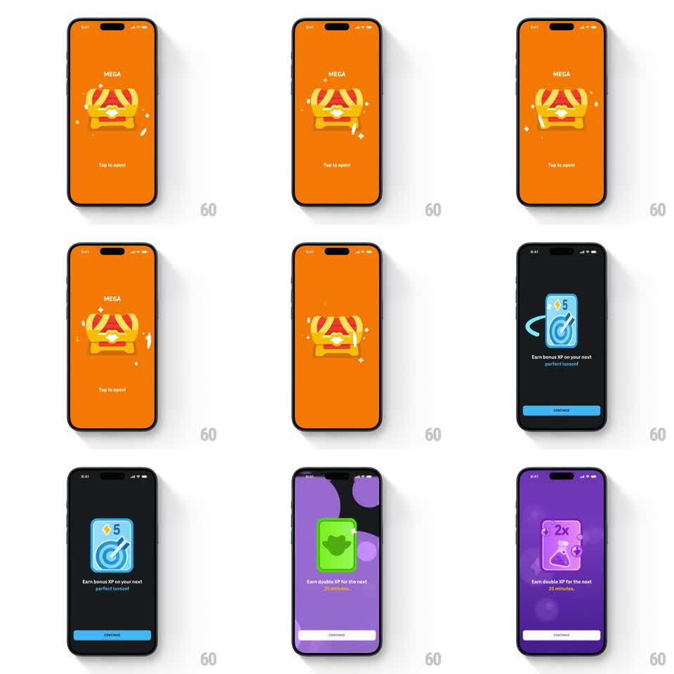

Media
Frame-by-frame

Rebuild this interaction 1:1: Duolingo's Mega chest unlock - a striped treasure chest waits on an orange stage ("Tap to open!"), shakes with anticipation on tap, bursts open with sparkles and light, then reveals the reward card (bonus XP) on a color-matched stage with a CONTINUE button.

Rebuild this interaction 1:1: Duolingo's Mega chest unlock - a striped treasure chest waits on an orange stage ("Tap to open!"), shakes with anticipation on tap, bursts open with sparkles and light, then reveals the reward card (bonus XP) on a color-matched stage with a CONTINUE button.
## Integration
Integration: stack-agnostic spec - springs given as stiffness/damping, timed motions as duration + curve; map every value to your framework and animation library of choice.
## Scene
Full-screen orange stage: "MEGA" label top, big striped chest center, "Tap to open!" prompt. After the reveal: stage switches to the reward's color (blue for bonus XP, purple for XP boosts), reward card center, description, CONTINUE button.
## Motion spec
Pattern: tap-triggered reward sequence, ~2.5s.
- Idle: chest breathes (scale 1 -> 1.03, 2s); tiny sparkles twinkle around it (random 1-2s twinkles).
- On tap: chest shakes with growing intensity (rotate +-4deg at ~10Hz, ramping over 500ms), prompt text fades out (150ms).
- Burst: lid flings open (rotateX -70deg, 300ms, spring overshoot), a light column shoots from the chest (scaleY 0 -> 1, 250ms, fades), and 6-8 sparkle particles arc out (gravity-affected, 500ms).
- Reveal: stage crossfades to the reward color (300ms); the reward card flips in (rotateY 90 -> 0, spring ~300/20) with a shine sweep (highlight band across the card, 400ms).
- Copy + CONTINUE slide up (250ms, ease-out).
## Calibration
- The anticipation shake is mandatory - bursting without the wind-up feels cheap.
- One big burst, then calm: particles settle, stage holds.
## Reduced motion
Tap crossfades to the revealed reward (300ms), no shake, no particles.
## Don't miss
- Stage color always matches the reward type.
- The chest's lid stays open behind the reward card, dimmed.